Scout
An embedded AI pricing co-pilot. This is the complete behavioral specification — every surface, state, transition, and consideration needed to build it.
Written as design intent: it describes what the product does and how it behaves, not how the prototype was coded. Numbers (timings, sizes) are intended behavior, not implementation mandates. 32 states are captured with annotated screenshots — click any image to enlarge.
Overview
Scout is an embedded AI pricing co-pilot that lives inside a dense pricing grid — the surface where an analyst sets and publishes fuel prices per customer, location, and product. It answers questions about the rows on screen: why a row is flagged, where margin is being left on the table, how the market moved, and how a price ranks against a benchmark. Every answer explains its reasoning, cites its sources, and states a confidence level, and the analyst can save reusable questions and multi-step paths, share them with teammates, and let Scout work in the background across many rows at once.
The mental model fits in one line: ask in plain language → get an explainable, scoped answer → save it for reuse → let Scout work in the background and tell you when it's done. Everything that follows is in service of keeping that loop calm and legible.
Entry points
Scout is reachable four ways, each tuned to a different moment in the analyst's work.
- Toolbar trigger. A control in the grid's toolbar labelled Ask Scout, carrying a small 8-bit mascot head, opens the panel. On first visit a one-time intro bubble points at it (see 2): Hi, I'm Scout 👋 — Your pricing co-pilot. Ask about any row — costs, margins, deltas. Click to start, or press ⌘G.
- Keyboard shortcut. Pressing ⌘G / Ctrl+G opens the panel from anywhere. It is open-only — it never toggles the panel closed — and is ignored while the analyst is typing in another input.
- Per-row ready indicator. A small three-dot marker in a pinned grid column lights up when a background answer for that row is ready; selecting it jumps straight into that row's conversation.
- Cross-page alert. When Scout finishes thinking while the analyst is on another page, a name tag reading Scout is ready and alert cards in the app's Control Panel invite them back.
- 1Ask Scout trigger — Toolbar entry point; also opens on ⌘G.
- 2First-run intro bubble — One-time tip anchored to the trigger.
Design tone
The intended feel is calm, trustworthy, and quietly intelligent — "a thinking machine." The brand color is a deep violet (#715DAA) and the type is Lato. Motion is present but restrained: a slow shimmer while Scout thinks, gentle slides between views, never anything bouncy.
Information architecture
Scout lives in a single panel that holds two top-level views, reached through a tab strip: Chats and Library. Everything the analyst does — asking, reviewing past conversations, and reusing saved questions — happens inside this one surface, so navigation never leaves the pricing grid behind.
The tab strip is the panel's primary wayfinding control (see 1). Chats is list-first: it opens onto the full set of conversations rather than a single thread. Each conversation appears as a card; selecting one slides into that conversation, and a back affordance labeled ‹ All Chats returns to the list. There is no separate inbox view — the Chats list is the inbox, carrying an unseen-count badge when background answers are ready.
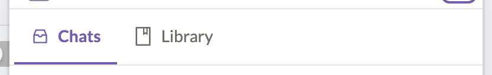
1- 1Tabs — Chats / Library.
The Library view holds reusable saved items: Prompt (one question) and Path (an ordered sequence of questions). It offers search, a starred-only filter, and an ownership filter spanning All, Yours, and Shared with you.
Scoping
Scoping is the cross-cutting concept: whatever the analyst selects in the grid — a row, a single cell, or a multi-cell selection — becomes the conversation's context, and Scout answers about that scope; with nothing in focus, it answers about the whole view.
Panel modes
The panel presents in one of two modes, switched by a single control. It can float as a draggable, resizable card docked top-right, or dock as a sidebar at full height, pushing the grid leftward to make room.
| Surface | Purpose |
|---|---|
| Chats view | List-first home for every conversation; opening a card slides into that thread. |
| Library view | Saved Prompts and Paths, with search, starred-only, and ownership filters. |
| Floating mode | Draggable, height-resizable card docked top-right, overlaying the grid. |
| Sidebar mode | Full-height dock that pushes the grid left for a side-by-side layout. |
Panel anatomy & layout
The panel is a single vertical stack of five regions, ordered top to bottom, that stays consistent whether Scout floats as a card or docks as a full-height sidebar. Everything an analyst can do to Scout itself lives in these regions; a handful of supporting surfaces deliberately render outside the panel.
Top-to-bottom chrome
- Title row — the mascot mark and Scout wordmark sit on the left; a control cluster sits on the right, in order: Save as path, Clear, Mode (float/dock), Minimize, and Close. Save-as-path and Clear appear greyed and inert when there is nothing to act on (see 2, 3). In floating mode this whole row doubles as the drag handle (see 1).
- View nav — the Chats / Library tab strip. The Chats tab carries an unseen-count badge when background answers are ready. Inside an open conversation, a ‹ All Chats back control replaces the tab strip.
- Context-chips bar (Chats only) — the current scope shown as removable pills, or, when empty, the hint Nothing in focus · click a cell alongside a + Add a cell affordance.
- Body — the active view: welcome, conversation, chats list, or library. It slides horizontally when switching views, the push/pop direction matching the nav direction.
- Composer footer (Chats only) — a multi-line input that grows with content, placeholder Ask Scout about your quote book…, a Send button (inert while empty or busy), and a circular Undo affordance to the left that reverses the last turn.
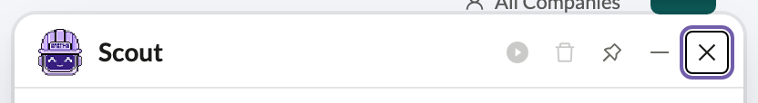
123456- 1Mark + wordmark — Drag handle in floating mode.
- 2Save as path — Disabled until saveable.
- 3Clear — Archive + empty (undoable).
- 4Mode — Float ↔ dock.
- 5Minimize — Collapse to mini-bubble.
- 6Close — Opens discard confirm.
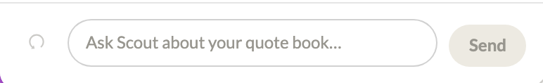
123- 1Input — Grows to multi-line; ⌘Enter sends.
- 2Send — Disabled while empty/busy.
- 3Undo — Reverses the last turn.
Geometry & behavior
In floating mode the panel anchors top-right with a margin and auto-fits to its content height, growing until it reaches a cap of roughly 80vh, after which the body scrolls and the chrome stays put. A resize grip at the bottom-right adjusts height only — width is fixed in floating mode and the cursor reads as a vertical-resize. Dragging the title row repositions the floating card; that position persists across a minimize and resets only on discard.
The Mode control toggles between floating and docked. Docked, the panel becomes a full-height sidebar that pushes the grid left rather than overlaying it (see 1).
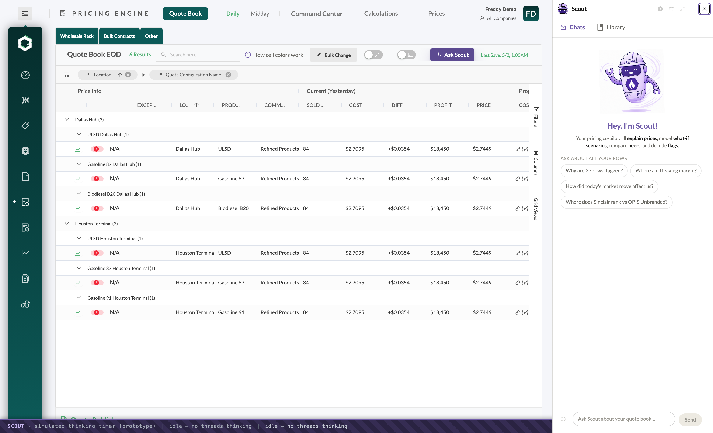
1- 1Docked panel — Full height; pushes the grid left.
Surfaces that render outside the panel
Several elements live beyond the panel frame and persist as the analyst works:
- the Ask Scout trigger and its first-run intro bubble
- the minimized mini-bubble (Resume conversation)
- grid cell highlighting and the per-row ready dots
- the cross-page name tag and the Control-Panel alert cards
- toasts
- the bottom prototype-timer bar
Conversation lifecycle
Every exchange with Scout moves through three phases — ask, thinking, and answered — and each phase paints a distinct surface so the analyst always knows whether Scout is waiting, working, or done.
The three phases
A turn begins when the analyst clicks a suggestion chip, types a question in the composer, or runs a saved prompt or path. The empty conversation opens on the welcome surface — a greeting plus closed suggestion chips and a free-text composer.
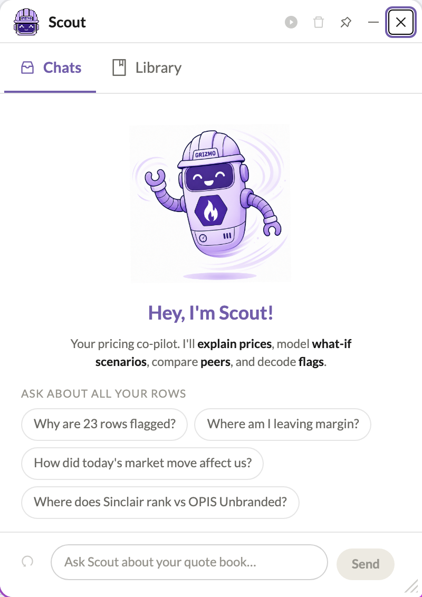
123- 1Chats / Library tabs — Two-tab nav; Chats is list-first.
- 2Suggestion chips — Closed prompts to get started.
- 3Composer — Free-text ask.
Ask. The question appears immediately as a right-aligned user bubble carrying the analyst's exact wording.
Thinking. A left-aligned Scout bubble appears showing live thinking steps — for example Reading flagged rows → Clustering causes → Checking policy bands. Steps reveal progressively under a gentle shimmer. When reasoning completes, the steps auto-collapse into a Show details disclosure (see 1).
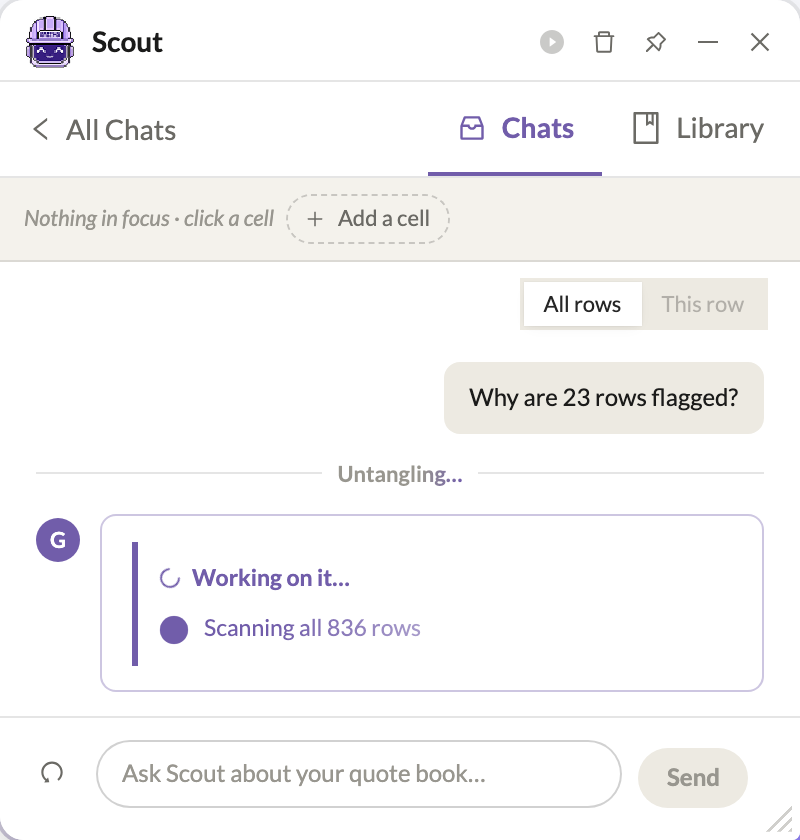
1- 1Scout is thinking — Steps reveal progressively, then auto-collapse.
Answered. The bubble fills in top to bottom, in a fixed order described below.
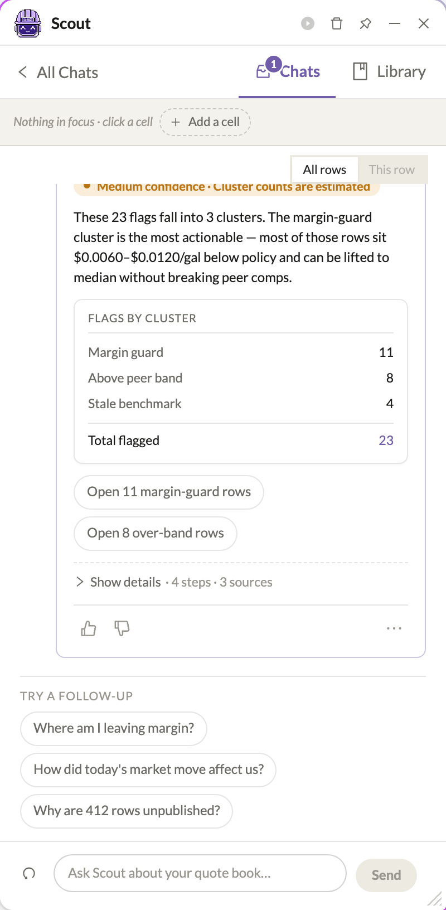
1234567- 1Scope tag — What rows the answer covers.
- 2Confidence — High / Medium / Low + caveat.
- 3Breakdown block — One of: paragraph, list, table, breakdown, CSV-link.
- 4Action chips — Scenario-specific next steps.
- 5Details disclosure — Steps + sources, collapsed.
- 6Feedback footer — 👍/👎 + ⋯ overflow.
- 7Follow-ups — “TRY A FOLLOW-UP”.
Answer bubble anatomy
Reading down the answered bubble (see 1–7):
- Scope tag — an All rows / This row indicator of what the answer covers.
- Confidence line — a colored dot plus label, often with a short caveat such as Medium confidence · Cluster counts are estimated.
- Answer body — one or more typed blocks (see below).
- Action chips — scenario-specific next steps, e.g. Open 11 margin-guard rows, Open 8 over-band rows.
- Details disclosure — collapsed reasoning and sources.
- Answer footer — feedback controls and an overflow menu.
- Follow-up chips — suggested next questions.
Answer-body block types
The body supports several block types, mixed as the answer requires:
- Paragraph — free prose.
- Bullet list — enumerated points.
- Table — rows and columns.
- Breakdown — a labeled tally, e.g. FLAGS BY CLUSTER — Margin guard 11, Above peer band 8, Stale benchmark 4, Total flagged 23.
- CSV-link — an export affordance for the underlying data.
Confidence & sources
Confidence and sources are first-class, never decoration. The confidence line maps one of three levels to a color:
| Level | Dot color |
|---|---|
| High | Green |
| Medium | Amber |
| Low | Red |
The Show details · N steps · M sources disclosure expands to reveal the full thinking steps and the cited sources, each rendered as a clickable pill.
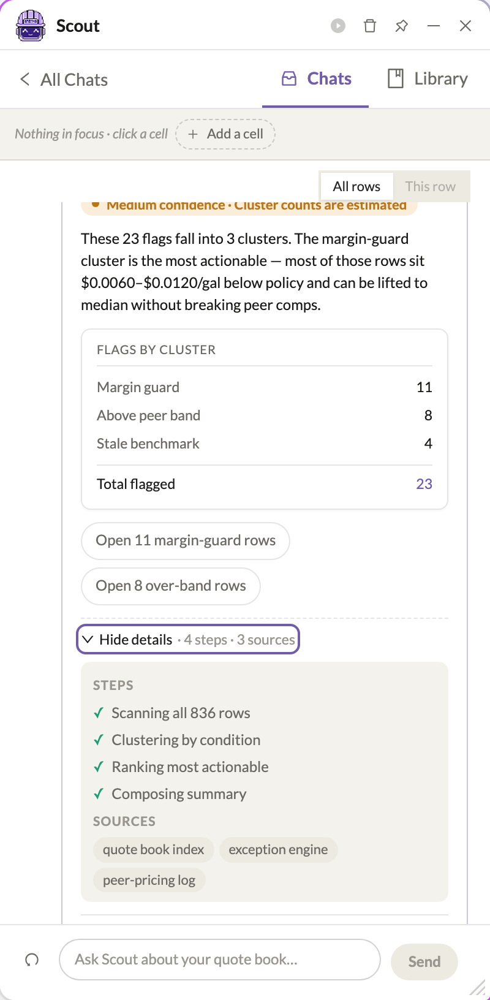
1- 1Reasoning + sources — Transparency: how Scout got here.
Feedback flow
The answer footer carries a thumbs-up / thumbs-down rating and a ⋯ overflow menu (copy, export, save, and similar).
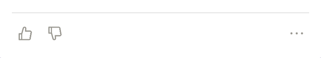
12- 1Thumbs — 👍 / 👎 rating.
- 2Overflow ⋯ — Copy, export, save…
Choosing thumbs-down opens an inline feedback form: a reason picker — wrong data / misread / made up — plus an optional note.
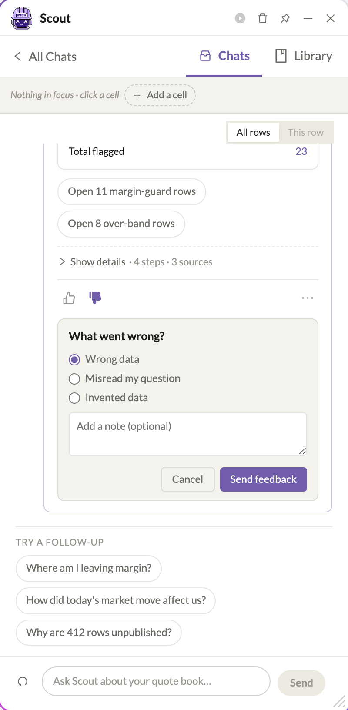
1- 1Inline feedback — Reason picker + optional note.
Submitting swaps the form for a receipt reading Thanks — this helps Scout improve.
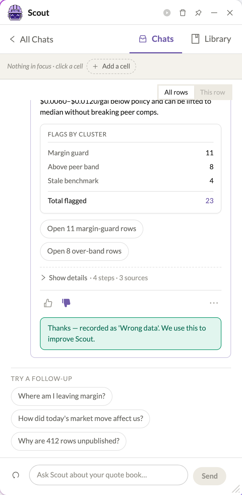
1- 1Receipt — Confirms feedback logged.
Follow-ups
Under the heading TRY A FOLLOW-UP, Scout offers suggested next questions such as Where am I leaving margin?. Tapping one continues the conversation as a fresh ask.
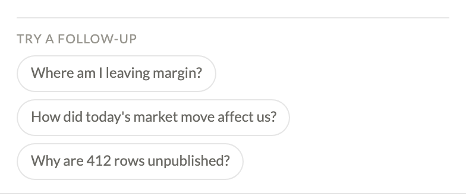
1- 1Suggested follow-ups — Tap to continue the thread.
Clearing & undo
The Clear control archives the current conversation and empties the surface; an Undo affordance restores it. Starting a new question after clearing retires the undo buffer, so the restore is no longer available.
Toast
At most one toast is shown at a time, anchored at the bottom of the viewport. It auto-dismisses and carries a success, warning, or error tone depending on the event.
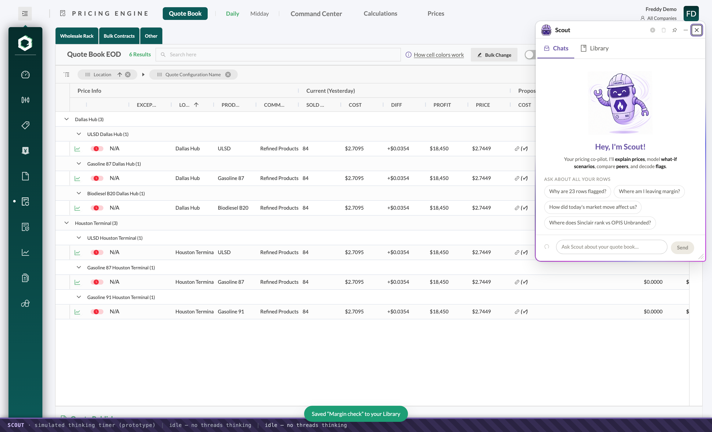
1- 1Toast — Single, auto-dismiss; success/warn/error.
Threading & background work
Scout is multi-threaded: every row — and the whole-view stream — can hold its own conversation that keeps working in the background while the analyst does other things. Each conversation moves through a small, well-defined state machine, and the moment any one of them finishes, a coordinated set of surfaces lights up together so the answer is impossible to miss.
Three thread states
A conversation is always in exactly one of three states. State drives every status affordance described below.
| State | Meaning | How it reads |
|---|---|---|
| in-progress | Scout is still thinking on this conversation | Animated dots, a quiet shimmer |
| ready | An answer is waiting but has not been opened | Solid dot plus an accent rail; counted as unseen |
| viewed | The answer has been opened and seen | Muted; no longer counted |
An unseen count aggregates every conversation currently in the ready state. Opening a ready conversation moves it to viewed and decrements that count.
Simulated think time & the single clock
In the prototype, a question takes a fixed ~20 seconds to move from in-progress to ready — a stand-in for real model latency. One global clock drives every surface, so countdowns and status flips stay in lockstep no matter which page the analyst is on.
Surfaces that flip together on ready
When a thread crosses into ready, all of these update in the same beat:
- The per-row dot for that row lights and begins pulsing.
- The Chats unseen badge increments.
- The cross-page name tag reads Scout is ready.
- A card appears in the Control Panel for that thread.
Chats inbox
The Chats tab lists conversations as question-led cards (see 1, 2). Each card shows the lead question, a one-line answer preview, a timestamp (for example Jun 1 · 4:41 PM), a status badge (animated dots while thinking, a solid dot with an accent rail when ready, muted once viewed), a star toggle, and a ⋯ menu (favorite, delete, save). The tab itself carries the unseen count badge (see 3), and a control to start a fresh conversation sits at the top (see 4). Clicking a card slides into that conversation.
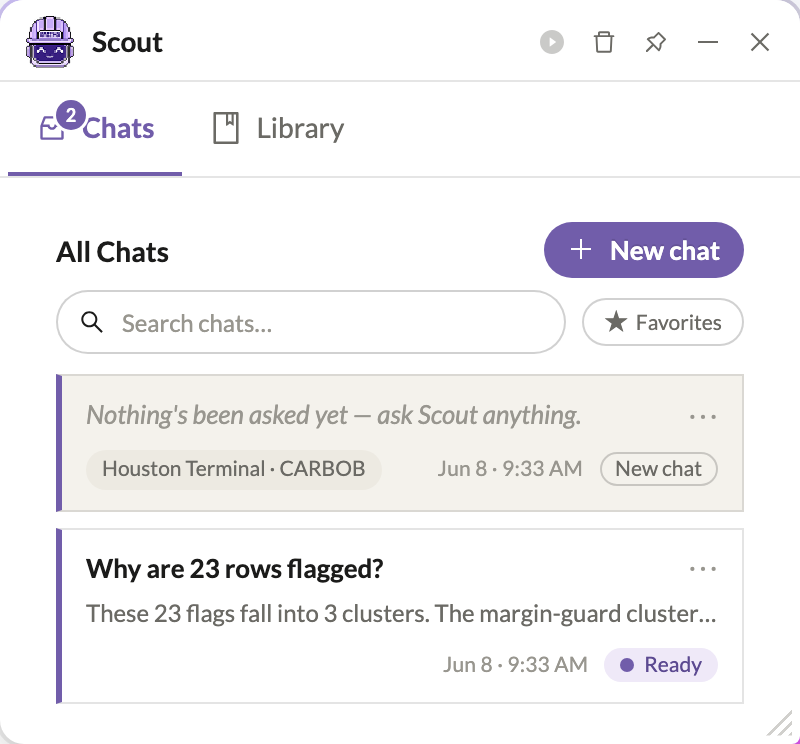
1234- 1Conversation card — Question-led; preview + timestamp.
- 2Lead question — What was asked.
- 3Unseen badge — Counts ready answers.
- 4New chat — Start a fresh conversation.
Per-row ready indicator
A pinned left-gutter marker of three dots signals each row's background state (see 1): lit and pulsing when that row's answer is ready, a quiet shimmer while in-progress, and absent when the row has been viewed or has no conversation at all. Clicking the marker jumps straight into that row's conversation.
- 1Ready dots — Lights when that row’s background answer is ready.
Scoping & context
Every conversation is anchored to a context — the slice of the grid the analyst is asking about. Context is captured as removable chips in a bar at the top of the Chats view, set by clicking cells in the grid, and mirrored back as colored highlighting on the grid itself. With nothing in focus, Scout answers about the whole view.
Context chips
The context bar holds one or more chips describing the current scope. Three kinds exist:
- Row chip — a whole row (one customer / location / product line).
- Cell chip — one specific value, such as a single proposed price.
- Selection chip — a multi-cell pick made within the scoping rules.
When empty, the bar shows the hint Nothing in focus · click a cell alongside a + Add a cell affordance (see 1, 2). When populated, each chip is a removable pill.
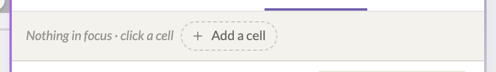
12- 1Empty hint — “Nothing in focus · click a cell.”
- 2+ Add a cell — Enters focused pick mode.
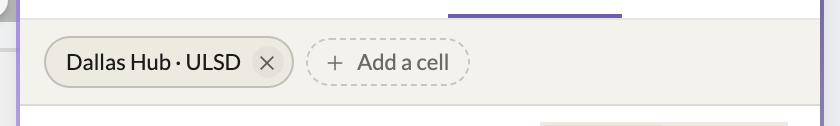
1- 1Context chip — Removable scope pill (row / cell / selection).
Default click behavior
While the panel is open, clicking a grid cell replaces the current non-pinned context with a fresh chip — a cell chip for a data column, a row chip for an identity column. Once any chip is explicitly pinned, further clicks append instead of replace. Clicking a chip's own target toggles that chip off. With the panel open, Scout's scoping intercepts the grid's normal click so a click scopes Scout rather than opening the row's drawer.
+Add mode and the no-diagonal rule
The + Add a cell affordance enters a focused picking mode: the cursor becomes a copy cursor and eligible cells gain a dashed outline. A multi-cell pick must share one row or one scope-group column — never a diagonal. Off-axis cells and identity cells are disabled while picking (see 1, 2). Pressing Esc exits the mode.
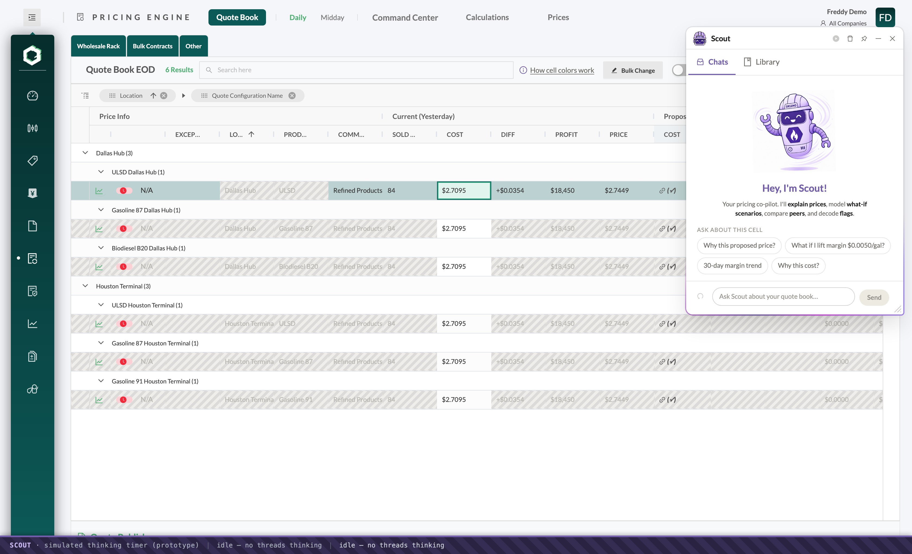
12- 1Picked / eligible — Same row OR one scope-group column.
- 2Disabled — Off-axis / identity cells can’t be picked.
Grid cell highlighting
Highlighting appears only while Scout is open, and it encodes scope at a glance:
| Treatment | Meaning |
|---|---|
| Soft green tint, inset outline, accented text | Scope cells — what the current context covers |
| Faint grey overlay | Identity cells — the row's descriptive columns |
| Subtle background tint per group | Column-group tints — Cost, Proposed, Margin, Δ-vs-prior, Flags |
| Violet outline badge | An explicit cell chip, marking its exact cell |
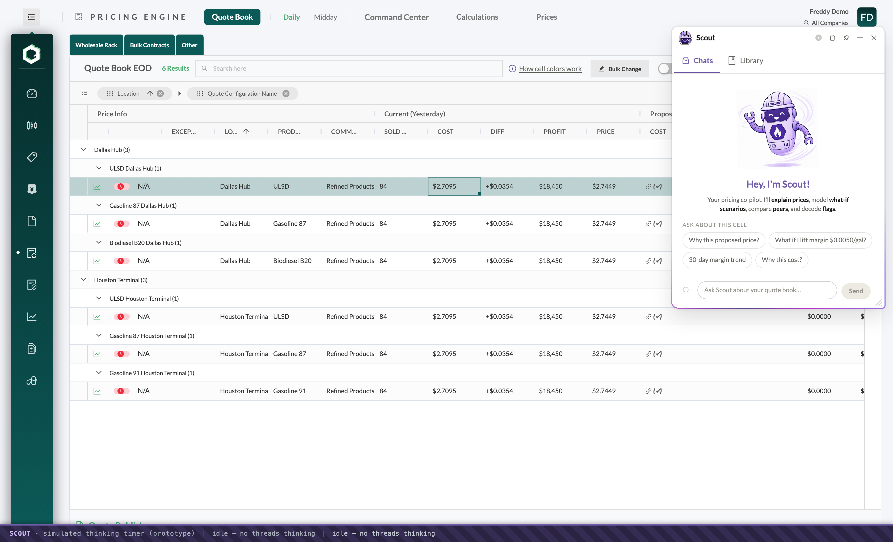
- See caption.
The "How cell colors work" tour
A How cell colors work text link near the grid's toolbar opens a popover explaining identity versus scope coloring (see 1). It replaces an earlier color-key legend strip, which was retired in favor of this lighter affordance.
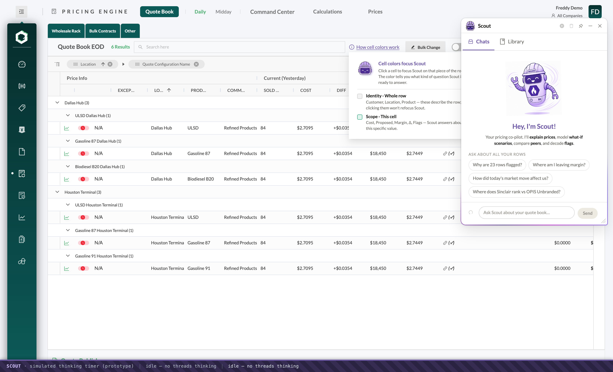
1- 1Cell-color help — Explains identity vs scope coloring.
Library, Save & Share
The Library is where reusable questions live, and where in-the-moment conversations get promoted into durable, shareable assets. It holds two kinds of saved item and gives the analyst a calm path from "I just asked this twice" to "this is now a one-click routine my team can run."
Two kinds of saved item
Every saved item is either a Prompt — a single reusable question — or a Path — an ordered list of questions that run in sequence. Both carry a name, a description, a scope (row-level versus aggregate/whole-view), a subject tag, a star for favoriting, and optional sharing.
Library cards, search & filters
The Library is list-first. A toolbar across the top offers a search field, a starred-only toggle, and an ownership filter with three states: All Yours Shared with you (see 1). Each card stacks a title with an actions row, then a meta row of pills — a kind pill reading Path · N steps or Prompt alongside scope and subject (see 2) — then a description clamped to two lines (see 5), then a footer carrying provenance on the left and the primary action on the right. Edit and Share reveal on hover; the star stays visible at all times (see 4).
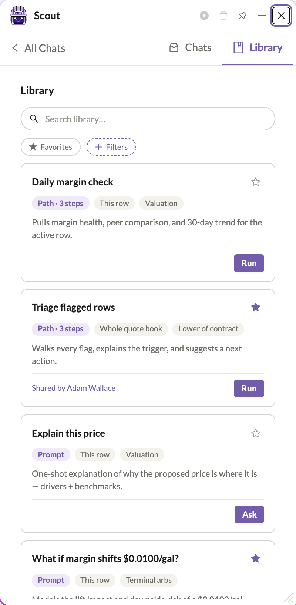
12345- 1Search & filters — Search, starred-only, ownership filter.
- 2Kind pill — “Path · N steps” or “Prompt”.
- 3Run / Open — Run a path; open a prompt.
- 4Star — Favorite (always visible).
- 5Description — 2-line clamp.
Two empty states cover the surface: a "nothing saved in this tab" state when a tab has no items, and a "no matches" state when filters or search exclude everything, paired with a Clear filters affordance.
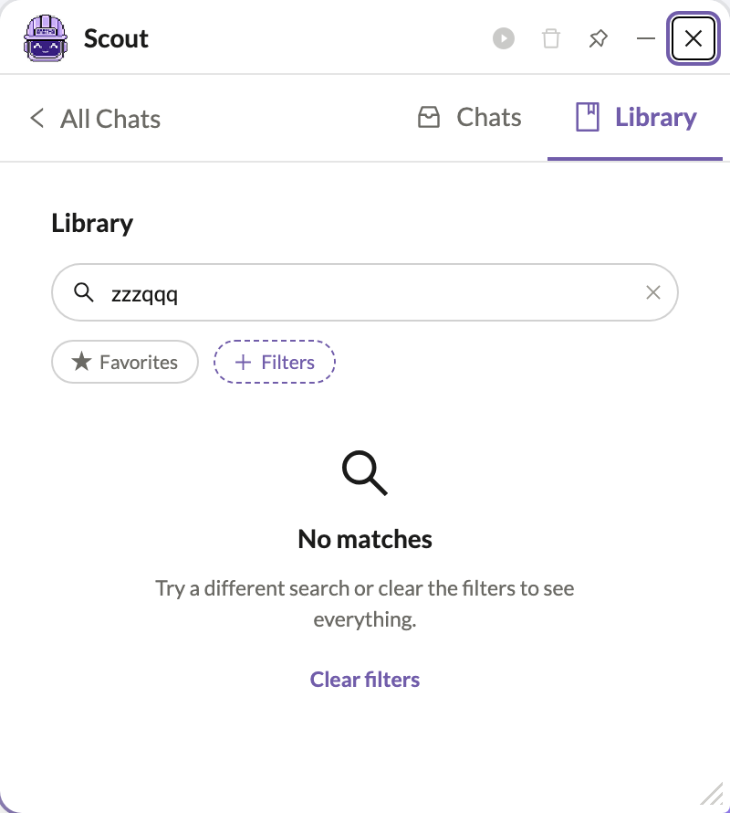
1- 1Empty state — “No matches · Clear filters.”
Running: Run vs Open
The card footer's action depends on the item kind (see 3). Run executes a path's steps sequentially — Scout switches to the chat view and streams each answer in turn. Open drops a prompt's text into a new ask, ready to send. A row-scoped item carries a guard: if it is run with no row in context, Scout surfaces a warning to Pick a row first rather than answering against the wrong scope.
The Save modal
Saving opens a two-tab modal. The Details tab collects a required name, an optional description, a subject, and the step list. Save stays disabled until there is both a name and at least one kept step.
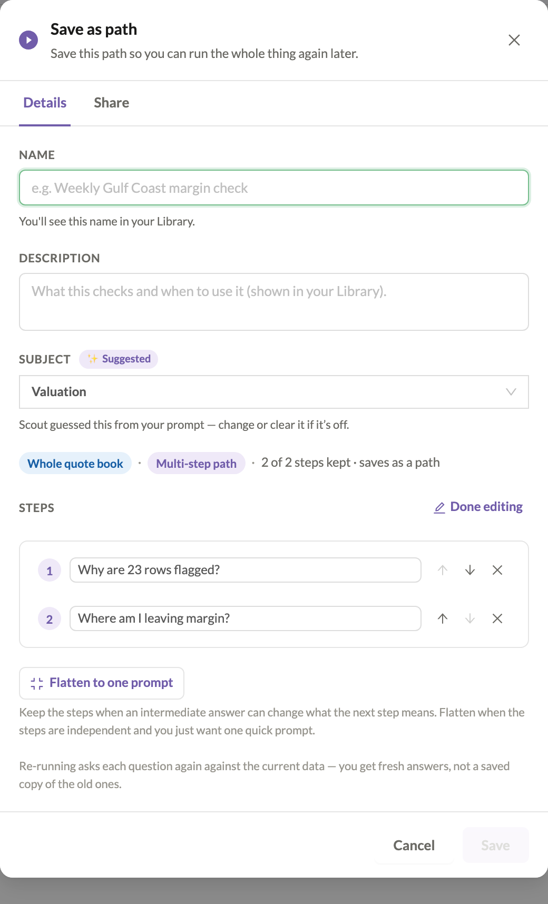
12345- 1Details / Share tabs — Two-tab save.
- 2Name & description — Name required.
- 3Step list — Rename / reorder / drop.
- 4Flatten on save — Collapse to a single prompt.
- 5Save — Disabled until valid.
The Share tab carries an audience picker built from scope cards — Only me Team Specific people — with a scrollable avatar list revealed when "Specific people" is chosen. The same picker control powers both this tab and the standalone Share modal, so the audience experience is identical in both places.
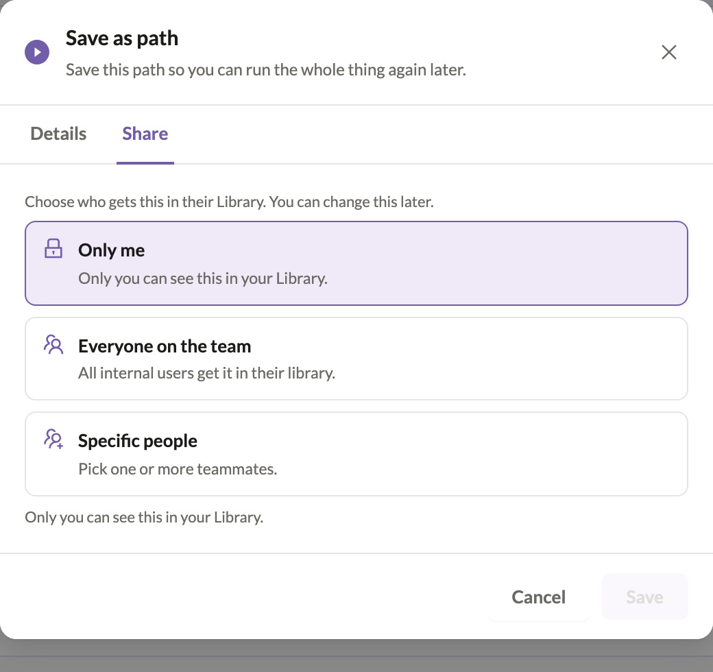
12- 1Audience scope — Only me / Team / Specific people.
- 2Scope card — Pick who can see it.
The inline path editor
Within the Details tab, a path's steps are directly editable: each step can be renamed inline, reordered up or down, or dropped. A dropped step renders struck-through and can be restored rather than vanishing. A Flatten on save option collapses the whole sequence into a single prompt for analysts who want one question instead of a multi-step run.
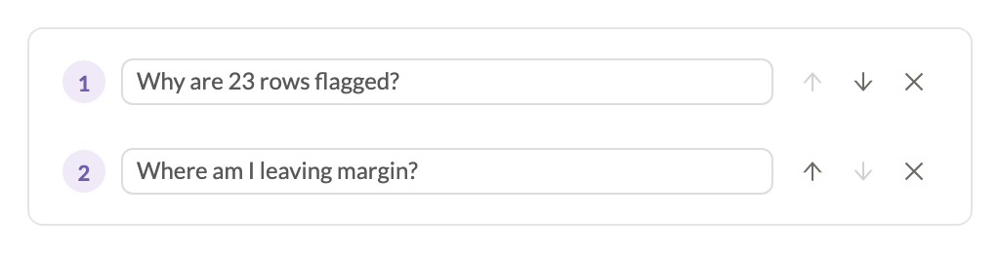
12- 1Inline rename — Edit each step’s text.
- 2Reorder / drop — Up · down · remove (restorable).
The path-candidate nudge
After the analyst runs two or more questions of the same scope in a row, Scout offers an inline prompt beneath the latest answer: Save these N questions on this row as a path? (or "on the quote book" for whole-view scope). It previews the step labels, offers a Save as path button, and a dismiss control.
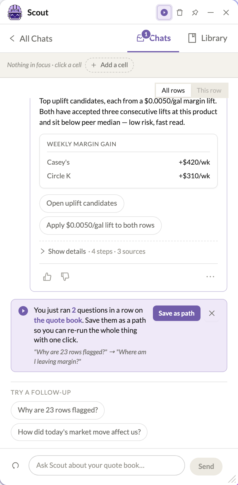
1- 1Save-as-path nudge — Appears after ≥2 same-scope questions.
The standalone Share modal
Opened from a card's overflow menu, the Share modal headers with the item name (see 1), presents the shared audience picker (see 2), and confirms with a Share action (see 3). One difference from the Save modal's Share tab: the standalone modal omits the "Only me" option, since sharing nothing privately is not a meaningful action here.
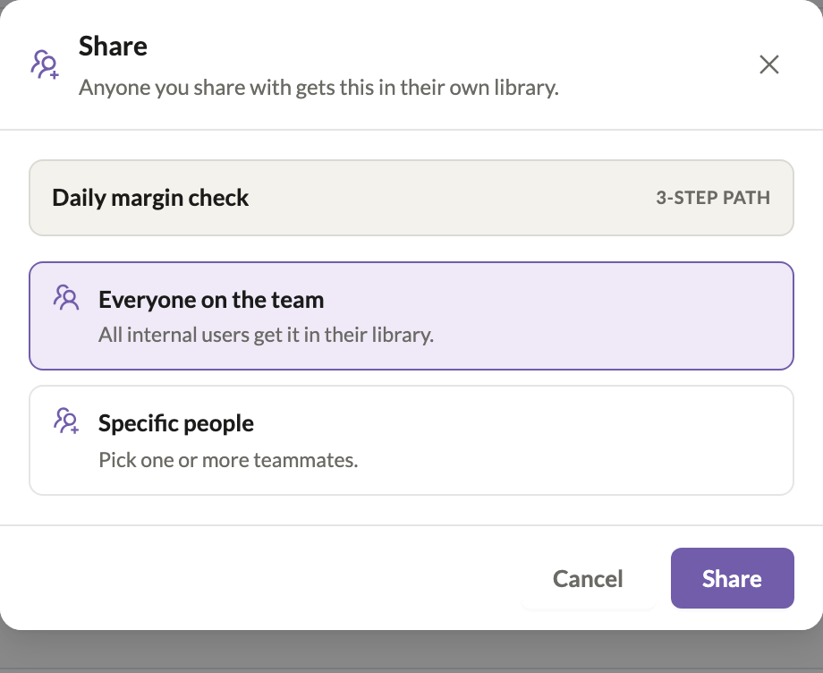
123- 1Item being shared — Saved prompt / path.
- 2Audience — Same picker as Save → Share.
- 3Share — Confirm.
Cross-page chrome
Scout keeps working after the analyst leaves the Quote Book, so a thin layer of status surfaces lives outside the panel and persists across navigation. Each one reflects the same underlying activity state — idle, thinking, or ready — and each offers a path back into the conversation that produced it.
Trigger and activity badge
The Ask Scout toolbar control carries a small status badge that mirrors Scout's current activity: idle, thinking, or ready. The badge gives the analyst an at-a-glance read on whether background work is in flight or an answer is waiting, without opening the panel. The trigger also opens the panel via ⌘G / Ctrl+G.
Name tag
A compact tag sits near the user's name in the app header and reads Scout is thinking, Scout is ready, or an idle state, accompanied by an unseen dot when answers are waiting. It updates in lockstep with every other ready surface the moment a conversation finishes.
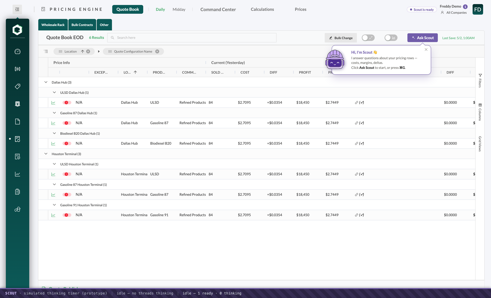
1- 1Scout status — “Scout is thinking / ready”.
Control-Panel alert cards
Scout replaces the app's "Recent Alerts" empty state with a card for each ready conversation. Clicking a card (see 1) navigates back to the Quote Book and opens that exact conversation, so an analyst who wandered off can return to a finished answer in one move.
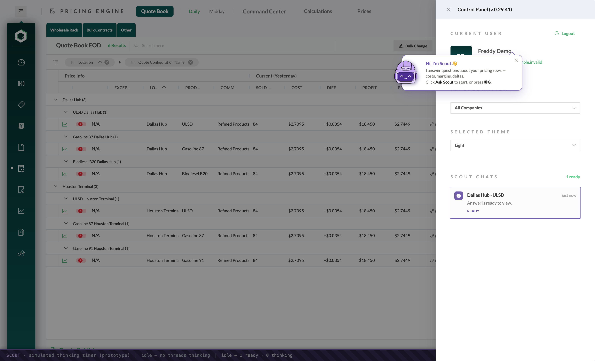
1- 1Ready alert cards — Click jumps back into the thread.
Minimized mini-bubble
Minimizing collapses the panel to a small violet pill anchored just above the trigger, labelled Resume conversation, with a gentle sheen. Clicking it reopens the full panel with all state intact — context, conversation, and position preserved.
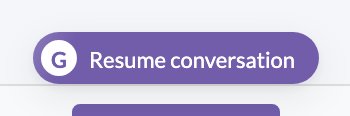
1- 1Resume pill — Anchored above the trigger; reopens with state intact.
First-run intro bubble
On first visit a one-time tip points at the trigger: Hi, I'm Scout 👋 — Your pricing co-pilot. Ask about any row — costs, margins, deltas. Click to start, or press ⌘G. It appears once and does not return on later visits.
Bottom prototype-timer bar
A deliberately utilitarian fixed strip spans the bottom of the viewport — dashed top border, monospace type, neutral greys with an amber accent — reading PROTOTYPE TIMER (simulated latency — not part of Scout) alongside a soonest-ready countdown (see 1, 2).
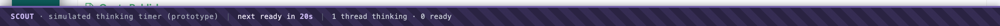
12- 1Label — “PROTOTYPE TIMER (simulated latency)”.
- 2Countdown — Soonest ready answer.
Motion & micro-interactions
Motion is present but restrained — it signals a calm "thinking machine," never bounces or distracts. Every effect is slow, low-contrast, and purposeful; together they make the empty state feel alive, the work-in-progress feel legible, and view changes feel spatially grounded.
The signature effect is the shimmer border that rings the panel: a multi-color ring sweeping indigo into violet into magenta, with two glints orbiting the edge at different rates and directions so the panel reads as actively reasoning. At rest it stays a crisp 2px ring with no heavy glow. The same restraint governs the thinking state inside the body: live thinking steps and the inter-message thinking… divider play a gentle gradient sweep only while a turn is active, settling to static once the answer resolves.
Spatial transitions reinforce the panel's information architecture. The panel enters with a short upward translate plus fade. Switching between views animates as a horizontal push/pop whose direction matches the nav direction, so moving deeper and backing out feel like physical movement. Two small ambient touches add warmth: the welcome mascot drifts in a slow idle sway, and suggestion chips fire a one-shot diagonal gradient glimmer on hover.
| Motion | Where | Purpose | Approx timing |
|---|---|---|---|
| Shimmer border | Panel edge (always while open) | Conveys "a thinking machine"; two glints orbit at differing rates/directions | Continuous loop; 2px ring at rest |
| Thinking shimmer / divider | Live thinking steps + inter-message "thinking…" divider | Marks an active, in-progress turn | Continuous while thinking; stops on resolve |
| Panel slide-in | Panel on open | Establishes arrival without a jolt | ~200ms translate-up + fade |
| View push / pop | Switching between views in the body | Spatial mapping; direction matches nav | Short horizontal slide |
| Idle mascot sway | Welcome mascot, empty state | Keeps the zero state feeling alive | ~4.5s slow sway, looping |
| Chip glimmer | Suggestion chips on hover | Invites interaction | One-shot diagonal gradient sweep |
Copy & lexicon
Every surface speaks with one consistent vocabulary. The terms below are canonical: use them verbatim in labels, headings, and instructional copy, and never substitute near-synonyms. The product is named Scout, and a single conversation is always a chat in user-facing copy — never a "thread," even though threads are the internal mental model for background work.
Lexicon
These are the load-bearing nouns and verbs of the product. Keep capitalization as shown when a term names a feature or an item type.
| Term | Meaning |
|---|---|
| Scout | The product — the embedded AI pricing co-pilot. |
| chat | A single conversation. The user-facing word for what is internally a thread; never say "thread" in copy. |
| Ask Scout | The trigger action and toolbar label that opens the panel. |
| context / in focus | The current scope — the row, cell, or selection the answer is about. |
| Prompt | A saved item that is one reusable question. |
| Path | A saved item that is an ordered sequence of questions. |
| Run | The verb for executing a Path's steps in sequence. |
| Open | The verb for dropping a Prompt's text into a new ask. |
| confidence | The High / Medium / Low rating every answer carries. |
| sources | The citable references behind an answer. |
| follow-up | A suggested next question offered beneath an answer. |
Key strings
Reproduce these exactly, including punctuation, casing, the middot separator, and the ellipsis. Strings shown with N or M interpolate live counts.
| Location | Exact string |
|---|---|
| Trigger button | Ask Scout |
| Welcome greeting | Hey, I'm Scout! |
| Context empty hint | Nothing in focus · click a cell |
| Add-context affordance | + Add a cell |
| Composer placeholder | Ask Scout about your quote book… |
| Send button | Send |
| Confidence example | Medium confidence · Cluster counts are estimated |
| Follow-up heading | TRY A FOLLOW-UP |
| Details disclosure | Show details · N steps · M sources |
| Chats list back control | ‹ All Chats |
| View tabs | Chats / Library |
| Minimized pill | Resume conversation |
| Prototype timer bar | PROTOTYPE TIMER (simulated latency — not part of Scout) |
Considerations & open questions
Scout is specified as a working behavioral prototype, which means several seams between the demo and a production build are deliberate. The items below are the decisions a rebuild must own, followed by the behavioral questions still open from review.
Production considerations a rebuild must decide
Real model swap
In the prototype every answer, thinking step, source, and confidence rating is canned, and each question takes a fixed simulated delay (~20 seconds) driven by a single global demo clock so that every surface flips status in lockstep. A real build wires the ask path to a live model or service: the fixed latency and the global clock both disappear, replaced by genuine streaming output and real per-request status. The three-phase turn (ask → thinking → answered) and its surfaces stay; only what fills them becomes real.
Real data-grid integration
Cell highlighting, the scope-group tints, the per-row ready indicator, and click interception all assume tight coupling to the real grid's column model and event handling. The hard constraint here is click interception: while Scout is open, a click on a cell must scope Scout rather than triggering the grid's own row interaction (e.g. opening a row drawer), and that interception must be reversible the moment Scout closes — without permanently breaking native grid behavior.
Persistence, identity & team roster
Saved Prompts and Paths, sharing, stars, and conversation history are all in-memory in the prototype and vanish on reload. A real build needs durable storage, an authenticated user to own saved items, and a team roster to populate the share picker's Specific people avatar list.
Preserve the scope & append rules
Two interaction rules are product decisions, not prototype artifacts, and must survive a rebuild: the pick constraint (a multi-cell selection shares one row OR one scope-group column, never a diagonal) and the chip behavior (clicks replace the active context until a chip is explicitly pinned, after which clicks append).
Always-on provider above navigation
Scout's background work and its status clock must persist as the analyst moves between pages. The state that owns threads and timing therefore has to live above the app's navigation layer; scoping it per-page resets in-flight background work every time the analyst navigates away.
Open behavioral questions surfaced in review
- Whether the per-row ready indicator should appear for every backgrounded row, or only for rows the analyst explicitly asked about.
- Whether the prototype timer bar should be hidden on authentication / login surfaces.
- Whether running a Path should let the analyst choose scope at save time, or always inherit the scope of the source conversation.
- Whether negative feedback should ever suppress or retract the answer, or only log the signal.
Screenshot index
Every captured state, annotated — click any image to enlarge. The gallery below collects each surface referenced throughout this spec: the trigger and intro bubble, welcome and composer, the full thinking-to-answered turn, follow-ups and feedback, context chips, the Chats inbox, Library, Save and Share modals, grid highlighting, per-row ready dots, the timer bar, and cross-page chrome.
- 1Ask Scout trigger — Toolbar entry point; also opens on ⌘G.
- 2First-run intro bubble — One-time tip anchored to the trigger.
- 1Chats / Library tabs — Two-tab nav; Chats is list-first.
- 2Suggestion chips — Closed prompts to get started.
- 3Composer — Free-text ask.
- 1Scout is thinking — Steps reveal progressively, then auto-collapse.
- 1Scope tag — What rows the answer covers.
- 2Confidence — High / Medium / Low + caveat.
- 3Breakdown block — One of: paragraph, list, table, breakdown, CSV-link.
- 4Action chips — Scenario-specific next steps.
- 5Details disclosure — Steps + sources, collapsed.
- 6Feedback footer — 👍/👎 + ⋯ overflow.
- 7Follow-ups — “TRY A FOLLOW-UP”.
- 1Suggested follow-ups — Tap to continue the thread.
- 1Thumbs — 👍 / 👎 rating.
- 2Overflow ⋯ — Copy, export, save…
- 1Inline feedback — Reason picker + optional note.
- 1Receipt — Confirms feedback logged.
- 1Reasoning + sources — Transparency: how Scout got here.
- 1Empty hint — “Nothing in focus · click a cell.”
- 2+ Add a cell — Enters focused pick mode.
- 1Context chip — Removable scope pill (row / cell / selection).
- 1Tabs — Chats / Library.
- 1Mark + wordmark — Drag handle in floating mode.
- 2Save as path — Disabled until saveable.
- 3Clear — Archive + empty (undoable).
- 4Mode — Float ↔ dock.
- 5Minimize — Collapse to mini-bubble.
- 6Close — Opens discard confirm.
- 1Input — Grows to multi-line; ⌘Enter sends.
- 2Send — Disabled while empty/busy.
- 3Undo — Reverses the last turn.
- 1Resume pill — Anchored above the trigger; reopens with state intact.
- 1Conversation card — Question-led; preview + timestamp.
- 2Lead question — What was asked.
- 3Unseen badge — Counts ready answers.
- 4New chat — Start a fresh conversation.
- 1Search & filters — Search, starred-only, ownership filter.
- 2Kind pill — “Path · N steps” or “Prompt”.
- 3Run / Open — Run a path; open a prompt.
- 4Star — Favorite (always visible).
- 5Description — 2-line clamp.
- 1Empty state — “No matches · Clear filters.”
- 1Details / Share tabs — Two-tab save.
- 2Name & description — Name required.
- 3Step list — Rename / reorder / drop.
- 4Flatten on save — Collapse to a single prompt.
- 5Save — Disabled until valid.
- 1Audience scope — Only me / Team / Specific people.
- 2Scope card — Pick who can see it.
- 1Inline rename — Edit each step’s text.
- 2Reorder / drop — Up · down · remove (restorable).
- 1Item being shared — Saved prompt / path.
- 2Audience — Same picker as Save → Share.
- 3Share — Confirm.
- 1Save-as-path nudge — Appears after ≥2 same-scope questions.
- 1Toast — Single, auto-dismiss; success/warn/error.
- See caption.
- 1Picked / eligible — Same row OR one scope-group column.
- 2Disabled — Off-axis / identity cells can’t be picked.
- 1Ready dots — Lights when that row’s background answer is ready.
- 1Label — “PROTOTYPE TIMER (simulated latency)”.
- 2Countdown — Soonest ready answer.
- 1Docked panel — Full height; pushes the grid left.
- 1Scout status — “Scout is thinking / ready”.
- 1Ready alert cards — Click jumps back into the thread.
- 1Cell-color help — Explains identity vs scope coloring.